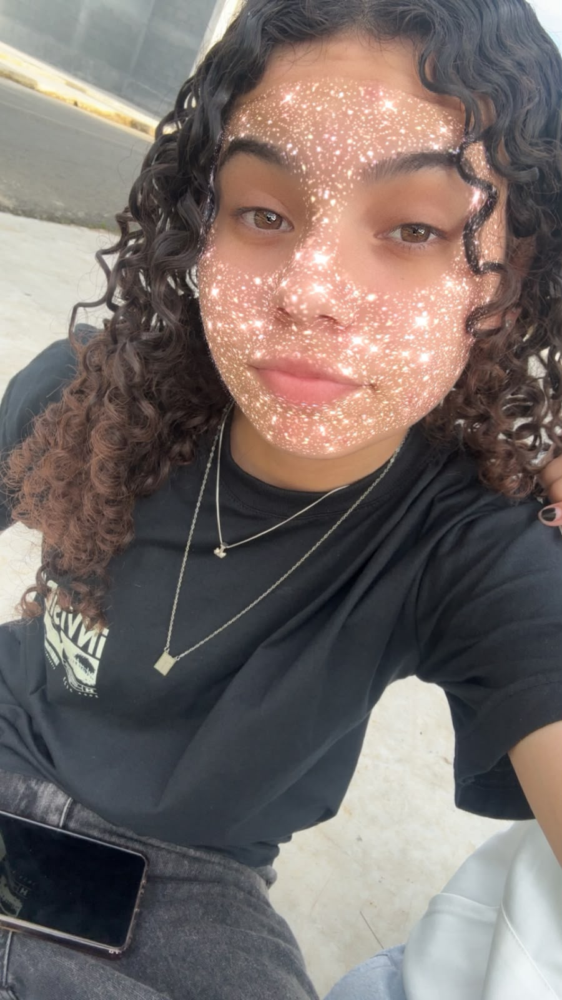

disponível para projetos
Olá, eu sou Ana Karollyne
Sou a Ana Karollyne, estudante de Técnico em Desenvolvimento de Sistemas, focada em construir o Front-End com HTML, CSS e JavaScript.
Sobre mim
Um pouco da minha trajetória até aqui.

Como o técnico já tava junto com as matérias do Ensino Médio, vi que era uma ótima oportunidade de sair da escola com uma profissão numa área que tem muito futuro. Gosto de criar sites comerciais e jogos. Agora, meu objetivo é colocar esse conhecimento em prática no ambiente corporativo e aprender com profissionais experientes para refinar meu código e entender as melhores práticas do mercado.
Este portfólio foi desenvolvido com o objetivo de apresentar os projetos realizados ao longo da minha trajetória e evolução no curso de Desenvolvimento de Sistemas. Atualmente, busco aprimorar meus conhecimentos para ingressar e atuar com excelência nessa área.
Projetos
Registro cronológico do que venho construindo.
Skills
Tecnologias e ferramentas que uso no dia a dia